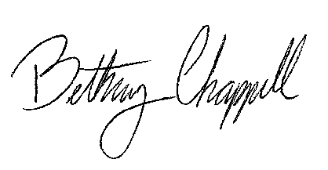

Refinements
PERSONAL LOG
April 22, 2015
Yesterday was degree symposium, and while I felt pretty unresolved about the work I was showing, I feel great about the feedback I received.
Some of the comments were a real kick in the butt, but I definitely needed to hear them.
The most important one was between Gunta and Rosa, who questioned the disconnect between my presentation and my end product. They said at the beginning I was presenting this really interesting thought process on failure and struggling in the creative process, but by the end product I seemed to miss my mark on the original idea I was going for. In fact, when I talked about my site, I was more talking about the interactions and the user experience more than the content. Which was great, but I think it revealed that I didn’t yet spend the time with considering how the content is connected or how to present these ideas in the user flow.
With that, Angela gave me a great idea about how she would love to see an article about my own process with this project. She said something clicked when I said, “I felt like it wouldn’t be fair for me to ask my audience to put themselves out there more and be bolder in their decision making, if I didn’t use this opportunity to take a risk with this project and enable my intent with this.”
The way that I did that was by designing the publication as a website, and actually coding it myself. This was risky for me, because I’m relatively new at web design, and only learned the basics of coding last semester. I didn’t know how much I’d be able to finish within the time constraints, or if I’d be able to figure out everything that I wanted the site to do. In the end, I only had three pages built out, and while I’m happy with how they look, I got caught up in trying so hard to make the code work that I veered away from actually considering the story that I was telling. With that, I’m definitely excited to implement Angela’s suggestion through the process book that’s our next phase of the assignment. While I initially wanted to make a book or a zine as a print artifact for the site, I think placing my process in a featured story for my magazine would have a much more compelling effect. And who knows, looking ahead maybe I could still make a print artifact with a brief compilation of my feature articles.
This also leads into another comment that I got yesterday, where Doug suggested that it would be more helpful to reveal the ‘dirty details’ of these processes. He said I talked a lot about the importance of mistakes in the beginning, but then when it came to the final execution I didn’t show any mistakes of the process. I did what every other creative magazine does and just showcased these impressive end results. He compared it to Behance, where most of the projects there will have a build out presentation of their final products, but won’t go into the process at all or how they got there. I absolutely agree; that designing a curated view of the process would be much more effective than another cool product showcase.
I did receive some complimentary comments too, talking about my idea and thoughts as being very inspiring and unique. I just need to connect my intent and my action.
That, and today I reopened my code to figure out what exactly I did wrong that caused the layout to break. I know that I haven’t fully understood the details of designing responsively, and that it’s bad practice to mix percentages and pixels when positioning and sizing the elements. I don’t think I fully grasped, though, how much damage that can do when resizing the browser window. What I did was position everything to fit my screen resolution, but the second I opened up the browser on a larger screen, random elements got wonky and the grid started to break. I honestly think I was trying to do too much of the technical work when I was sleep deprived, and wasn’t thinking about why I was using certain elements, I was just sorta trying to get it to look right. What I ended up doing yesterday was show up to the presentation room an hour before symposium was supposed to start, and literally plugged in my laptop and rewrote the div dimensions to be able to work on the projector’s resolution (which then led to it breaking on my smaller screen). Which was incredibly silly of me, but that’s how senseless the mind works when you’re that overtired.
Of course, reopening my code today I see that I mixed way too many units in the same grid. Mainly, I tried to make my images fluid in percentages and viewport widths/heights, but my containers in pixels. (like—WHAT?) It was an oops and a half. But today I went back into my Duckett book and read the chapter on fixed and fluid grids, which is insanely helpful. I’m kicking myself for not reading it earlier, but I think that’s also what happens if you try to code your entire degree project in a weekend. (Tip: Don’t do it…)
So this weekend I intend to go back and recode the grid structure, and I think for my purposes I’m going to start with a fixed width layout of 960px. I’m thinking later on, when time isn’t a concerning thing, I’ll work on making it fluid and fully responsive.
The great thing is, I haven’t lost my excitement for this project, and I really believe I’ll continue it after graduation. My goal is to make an actual first issue, with contributions from people I know, and leave the outsourced content that I have now as the prototype to get people interested.
I think the struggle, with self driven projects is... The idea that I initially ran with was to have a print-based publication with an associated virtual toolkit. But Brian brought up a considerable point yesterday, that I might be biting off more than I can chew by have the weight of the project be equally dispersed between print and digital. The feedback I recieved was to curate a content map, and let that determine the primary form. Then, maybe, I can design a hybrid between the two: A print magazine that includes a take away tool kit, or a virtual publication that has more features than interviews and articles.
I'm a list writer. (Explain project timeline here...) With that, is my decision: To not define this publication by the platform in which it’s published, rather, to keep the focus in terms of the audience [you, as creators], the content, and the mission. YET (here I go with contradicting myself again], because I am eager to build out a fully flushed out website, [as well as not signing myself up to spend hundreds of dollars on another project this year], I’m going to start with an online publication. Once I’ve starting building a content base to go off of, I’ll consider adding a print artifact as a premium feature.
Cheers!


© 2015 Beth Chappell
- Terms and Conditions
- Privacy Policy